Technical art / Personal specialization & research
Stylized Island Diorama
Five procedural materials built from scratch in Substance 3D Designer, with supporting meshes in Maya and final scene assembly and lighting in Unreal Engine 5.
- Role
- Procedural material artist · 3D modeling · Environment assembly
- Project type
- Individual specialization & research project
- Tools
- Adobe Substance 3D Designer · Autodesk Maya · Unreal Engine 5 · Substance 3D plugin
- Deliverables
- Water, sand, brick, wood and fire materials · Stylized island diorama
Final result
The final diorama brings together a compact sandy island, a stylized tower, a campfire and surrounding water. I designed the materials first, then shaped the scene's meshes and UV layouts around how those materials needed to tile.
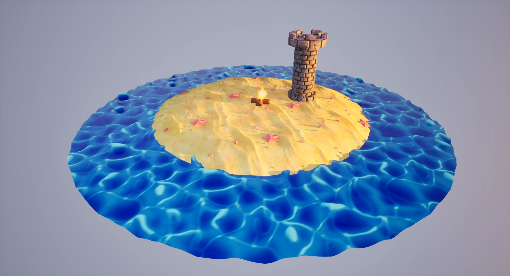
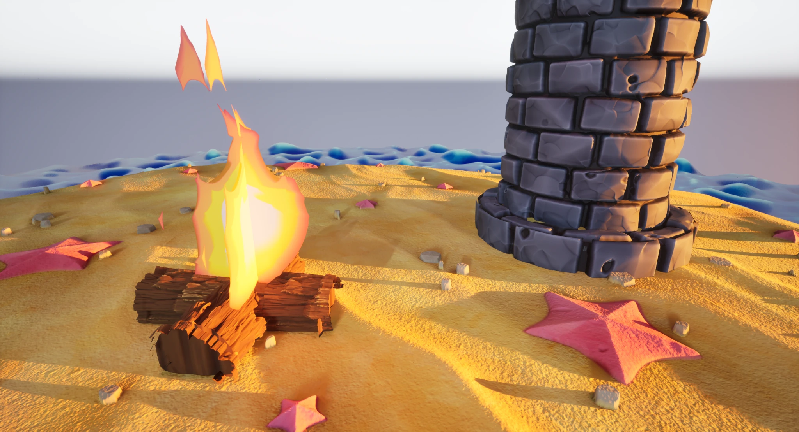
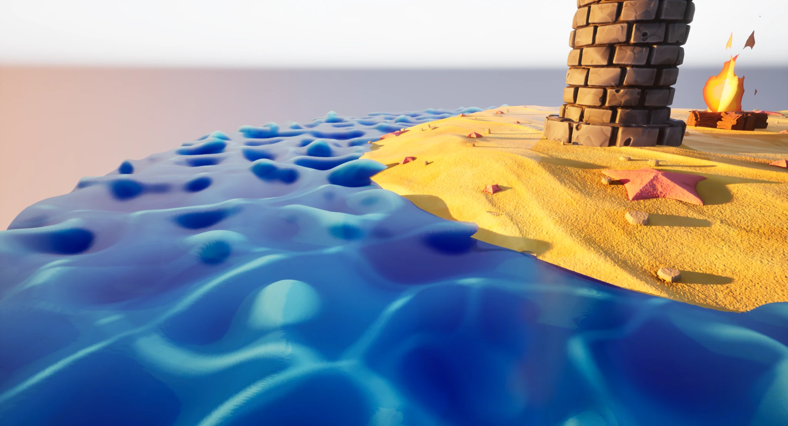
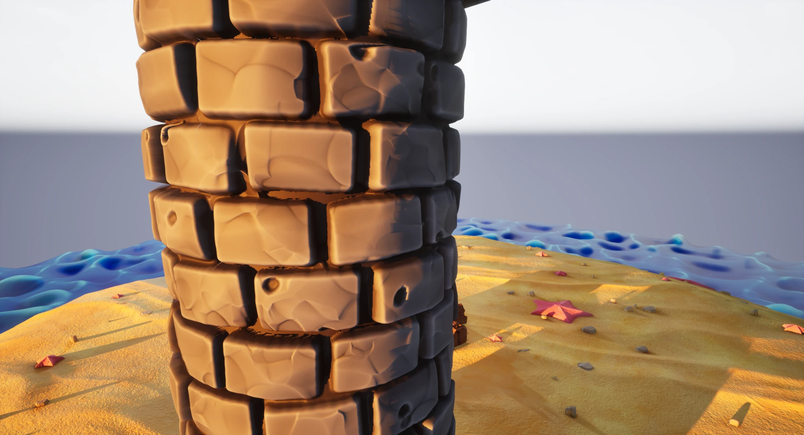
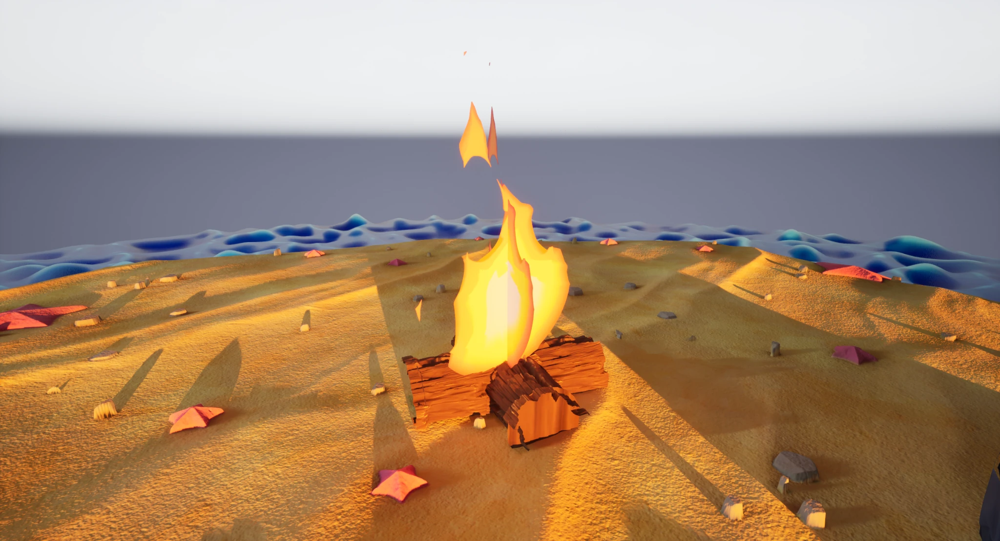
Procedural material breakdown
Each surface started as a node-based graph in Substance Designer. I combined shape generation, warping, layered height information and color variation to push the materials toward a readable, stylized look.
01 / Water
Soft, stylized waves
Tile Sampler established repeating shapes, while blended noise, Directional Warp and Blur HQ softened the pattern into wave forms. I exported Base Color, Normal, Roughness, Metallic, AO and Height outputs.
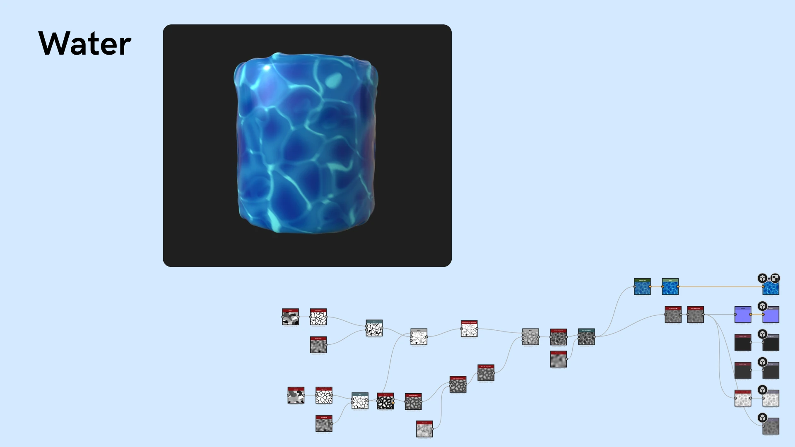
02 / Sand
Dunes, rocks and starfish
This was my most complex graph. I used Tile Sampler, Slope Blur, Directional Noise and Directional Warp to form dunes. Layered height masks placed rocks and starfish procedurally; noise and grayscale gradients added warm color variation.
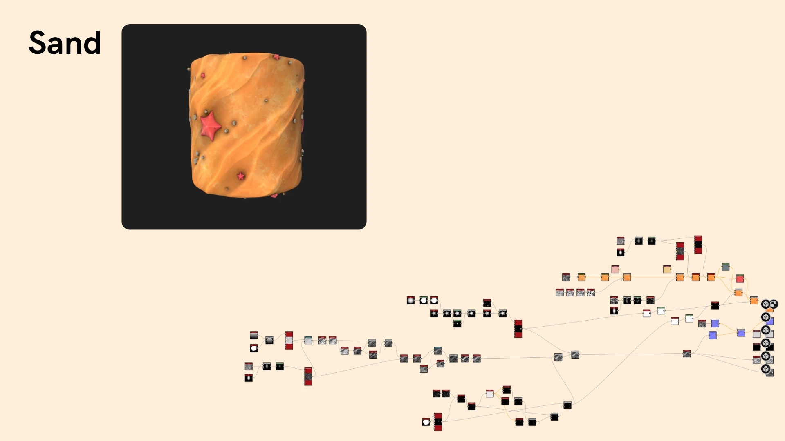
03 / Brick
Weathered tower surface
I generated the brick arrangement with Tile Sampler, then distorted the shapes to avoid a perfectly uniform pattern. Curvature-driven color variation and height details gave the stones their bevels and worn surface.
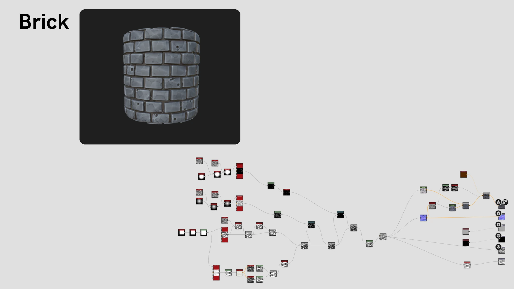
04 / Wood
Stylized grain for campfire logs
Tile Sampler, Directional Warp and Perlin noise helped build the grain direction and variation. I used color gradients to add warmth without making the surface visually noisy.
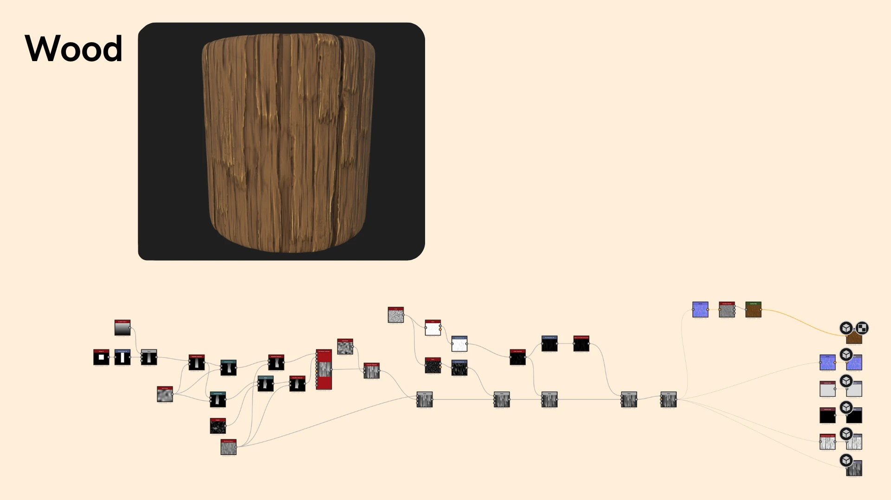
05 / Fire
Static cutout flame
I created a static fire alpha sheet from cutout shapes and gradients, then used a double-sided, opacity-masked plane in Unreal. This was a simple graphic solution, not an animated particle effect.
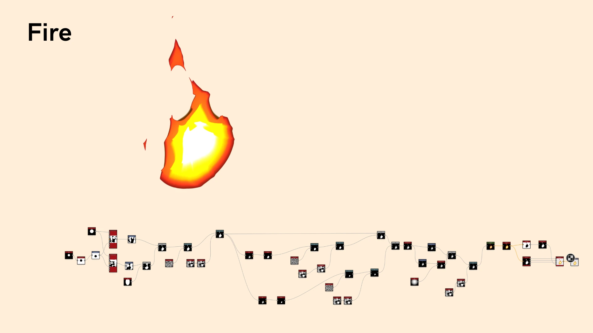
Modeling and UVs in Maya
Rather than build a complex scene first and search for textures afterward, I made straightforward meshes that complemented the procedural surfaces. The water and sand use circular planes with evenly scaled UVs. The tower uses a cylindrical mesh and vertical UV strips for consistent brick tiling; campfire logs use cylinders with straight UVs, and the fire uses a square-mapped plane.
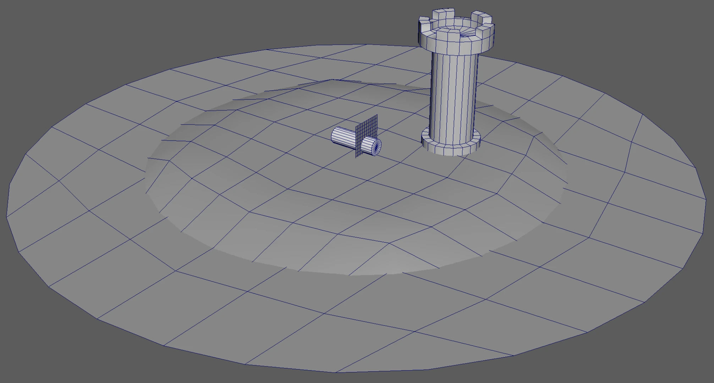
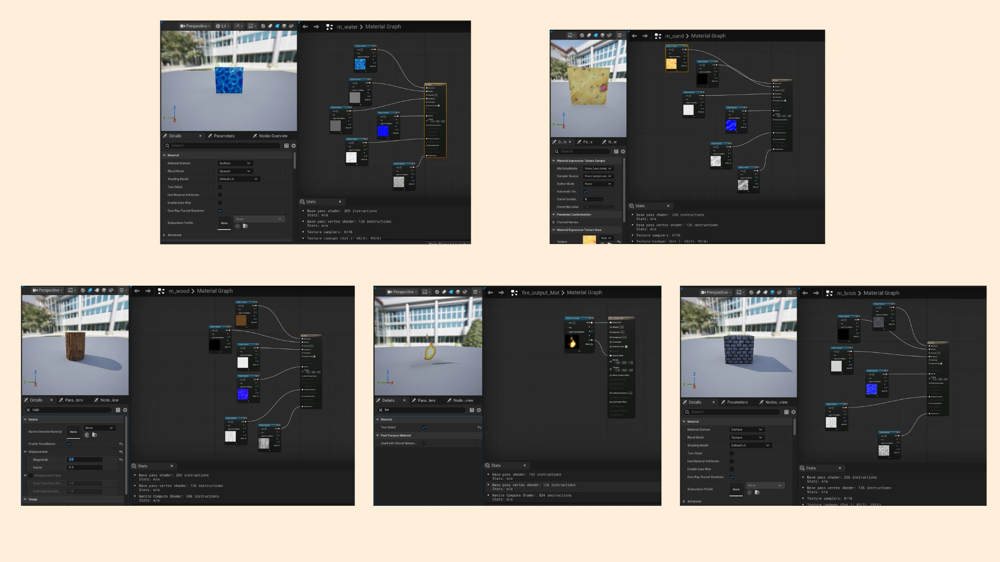
Integration in Unreal Engine 5
I imported the .sbsar assets through the Substance 3D plugin and set up Unreal materials manually. The primary surfaces used Base Color, Normal, Roughness, Ambient Occlusion and Height data; the fire plane used Base Color and an Opacity Mask. Nanite was enabled on the water, sand, tower and wood meshes during the height-detail experiments.
For the final presentation I used warm directional lighting, skylight fill and post-process adjustments to unify the materials. This stage was important because the surfaces looked different under game-engine lighting than they did in Designer.
Challenges and takeaways
- Keeping complex graphs organized: The sand graph, in particular, needed careful layering so dunes and small objects remained readable.
- Using height information deliberately: I experimented with how surface definition carried into the Unreal scene, rather than relying on color alone.
- UVs affected the visual result: Straight, evenly scaled UVs made the procedural materials easier to apply predictably.
- Building materials before geometry: Starting with the surface language helped the diorama feel cohesive despite its simple models.
What I would improve next
I would refine individual material graphs for easier reuse, further test how height details behave in-engine, and create a cleaner presentation sheet showing each material alongside its graph and mesh UVs. For the fire, animation would be a natural next step if the scene needed more motion.